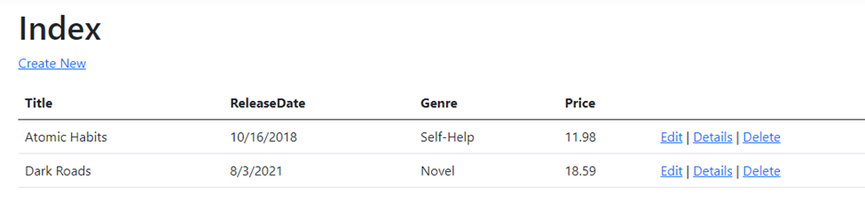
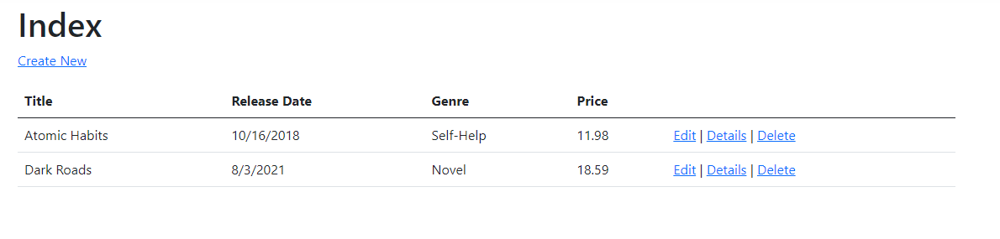
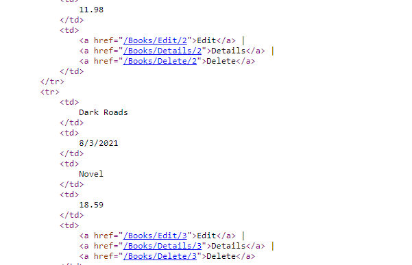
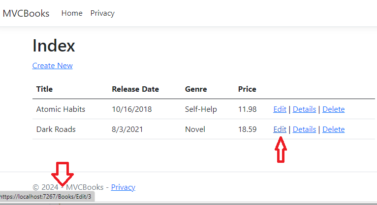
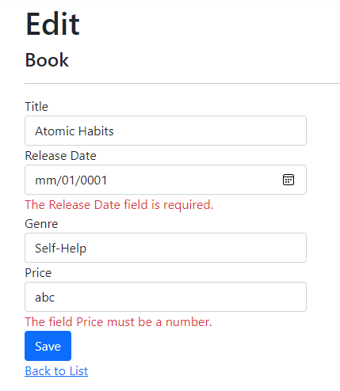

Nội dung bài học
Trong bài làm việc với cơ sở dữ liệu, chúng ta đã có được giao diện ứng dụng MVCBooks tại như sau:
Nếu để ý, cột ReleaseDate nối liền hai từ (Release và Date) sẽ không phù hợp với giao diện ứng dụng. Khắc phục vấn đề này, chúng ta mở tập tin Book.cs và thêm dòng mã mới như sau:
Chúng ta dùng thuộc tính Display để hiển thị trường ReleaseDate theo cách chúng ta mong muốn và trong trường hợp này là hiển thị hai từ Release Date thay vì chỉ một từ (mặc định) là ReleaseDate. Thuộc tính DataType dùng để xác định kiểu dữ liệu cho trường ReleaseDate như đã đề cập trong bài làm việc với cơ sở dữ liệu. Bên cạnh trường ReleaseDate, chúng ta cũng sử dụng thuộc tính Column đối với trường Price quy định kiểu dữ liệu là decimal với chiều dài tối đa cho giá trị trường này là 18 và phần lẻ là 2:
Ở đây chúng ta đang áp dụng DataAnnotations cho phép chúng ta áp dụng các luật (kiểu dữ liệu, cách hiển thị,…) đến các trường của một lớp (hay mô hình dữ liệu). Cùng nhìn lại giao diện Books
Các chức năng Edit, Details và Delete được phát sinh bởi các Tag Helper trong ASP.NET Core. Các Tag Helper cho phép các mã từ máy chủ có thể tham gia tạo và kết xuất các phần tử HTML đến các tập tin Razor, cụ thể trong dự án MVCBooks đó là tập tin Views/Books/Index.cshtml
(Tag Helper là một trong những tính năng mới phổ biến nhất trong ASP.NET Core. Chi tiết về Tag Helper có thể tham khảo tại đây.)
Kiểu Tag Helper cụ thể trong trường hợp này là Anchor Tag Helper sẽ phát sinh tự động các giá trị thuộc tính HTML href từ các phương thức hành động trong controller (BooksController) và định tuyến đến id. Ví dụ với Edit, thuộc tính asp-action sẽ phát sinh giá trị thuộc tính href đến trang Edit (/Books/Edit) và thuộc tính asp-route-id sẽ định tuyến trang đến id tương ứng theo cấu hình chúng ta đã thiết lập trong tập tin Program.cs:
Mở lại trang Books sau đó nhấn chuột phải vào trình duyệt (Chrome) chọn View page source chúng ta sẽ thấy các liên kết Edit, Details và Delete hàng thứ nhất và hàng thứ hai được kết xuất đến trình duyệt web như sau:
Chúng ta cũng có thể kiểm tra các URL của Edit, Details và Delete bằng cách đưa con trỏ chuột đến mục tương ứng sẽ xuất hiện URL góc trái dưới trình duyệt
Xét chức năng Edit, mở tập tin BooksController và tìm đến hai phương thức Edit. Phương thức đầu tiên là HTTP GET Edit:
Phương thức này tìm nạp thông tin đối tượng book và điền thông tin vào biểu mẫu Edit được tạo bởi tập tin Razor Edit.cshtml.
Phương thức HTTP GET Edit nhận id của đối tượng book làm tham số, tìm kiếm book dùng phương thức EF FindAsync và trả về đối tượng book tương ứng id đến trang Edit. Nếu book tương ứng với id không được tìm thấy, phương thức NotFound() được trả về (giá trị HTTP 404).
Khi hệ thống scaffolding (Xem lại Bài 4, mục Scaffold mô hình dữ liệu) tạo ra trang Edit, nó sẽ kiểm tra lớp Book và tạo mã kết xuất các thành phần <input> và <label> cho các thuộc tính (hay trường) của lớp. Một ví dụ trang Edit được phát sinh bởi hệ thống scaffolding của Visual Studio cũng chính là tập tin Razor Edit.cshtml
Lệnh đầu tiên là @model MVCBooks.Models.Book xác định lớp Book là mô hình mà trang Edit mong đợi. Các Tag Helper được sử dụng bao gồm Label Tag Helper hiển thị tên các thuộc tính hay trường như Title, ReleaseDate, Genre hay Price; Input Tag Helper kết xuất các thành phần <input>; Validation Tag Helper hiển thị các thông điệp xác thực được liên kết với các thuộc tính.
Phương thức kế tiếp là HTTP POST Edit:
Phương thức này xử lý thông tin đối tượng book sau khi được thay đổi. Tham số thứ 2 sử dụng thuộc tính [Bind] để bảo vệ chống lại hiện tượng được gọi là over-posting. Over-posting là hiện tượng một trường nào đó xuất hiện một cách không mong đợi (có thể được chèn bởi kẻ xấu thông qua một số công cụ). Chi tiết về over-posting tham khảo tại đây.
Thuộc tinh [HttpPost] xác nhận phương thức Edit này chỉ được gọi với các yêu cầu POST. Đối với các phương thức, thuộc tính [HttpGet] là mặc định.
Thuộc tính [ValidateAntiForgeryToken] dùng để ngăn chặn các hình thức tấn công yêu cầu giả mạo (Cross-site request forgery) còn được gọi tắt là XSRF or CSRF. Thuộc tính này được đi kèm với một thẻ chống yêu cầu giả mạo (anti-forgery token) được phát sinh bởi tập tin Views/Books/Edit.cshtml bằng cách dùng Form Tag Helper
Hệ thống sẽ nhận các giá trị từ form và tạo một đối tượng Book. Thuộc tính ModelState.IsValid dùng để xác nhận dữ liệu từ form có thể được dùng để thay đổi một đối tượng Book hay không. Nếu dữ liệu hợp lệ, dữ liệu này sẽ được lưu đến cơ sở dữ liệu nhờ phương thức SaveChangesAsync và hệ thống sẽ điều hướng người dùng đến phương thức Index của lớp BooksController để hiển thị các đối tượng Book, bao gồm các dữ liệu đã được thay đổi.
Trước khi dữ liệu form được gửi đến server, việc xác thực tính hợp lệ của dữ liệu sẽ được thực hiện tại phía client (trình duyệt) và nếu dữ liệu bị lỗi thì chúng sẽ không được gửi đến server. Trong trường hợp phía client tắt JavaScript và quá trình xác thực tại client không diễn ra thì phía server vẫn sẽ phát hiện dữ liệu không hợp lệ và hiển thị thông điệp lỗi thông qua các Form Tag Helper.
Xét các phương thức của Details:
Hệ thống scaffolding tạo ra phương thức này với chú thích là một yêu cầu HTTP GET gồm 3 phần controller Books, phương thức Details và giá trị id (5).
EF hỗ trợ phương thức Create tìm kiếm dữ liệu nhanh chóng nhờ phương thức FirstOrDefaultAsync. Nếu dữ liệu được tìm thấy (một đối tượng book), phương thức sẽ hiển thị thông tin, ngược lại sẽ trả về giá trị phương thức NotFound(). Đây là một đặc điểm quan trọng hỗ trợ bảo mật đề phòng một số người dùng tò mò (hay hacker) thay đổi nội dung của URL đến một id của một đối tượng book không tồn tại. Nếu chúng ta không kiểm tra null, một ngoại lệ sẽ phát sinh.
Xét các phương thức của Delete:
Phương thức HTTP GET Delete không xóa một đối tượng cụ thể nào, nó chỉ trả về một view nơi chúng ta có thể thực hiện một yêu cầu xóa. Tại đây, phương thức HTTP POST tên DeleteConfirmed sẽ xóa dữ liệu.
Thông thường CLR (Common Language Runtime) yêu cầu quá tải các phương thức (có cùng tên khác danh sách tham số) cho GET và POST như Create hay Edit. Tuy nhiên, Delete lại cần hai phương thức là Delete cho GET và DeleteConfirmed cho POST. Có một khó khăn với cách tiếp cận này bởi vì: ASP.NET ánh xạ đến các thành phần của một URL đến các phương thức hành động dựa vào tên, và nếu chúng ta thay đổi tên, quá trình định tuyến (routing) sẽ không thể tìm ra các phương thức đó. Giải pháp cho phương thức HTTP POST Delete là thêm thuộc tính ActionName("Delete") đến theo sau HttpPost:
Thuộc tính này sẽ giúp quá trình định tuyến tìm thấy phương thức DeleteConfirmed dễ dàng. Chúng ta cũng có thể định nghĩa quá tải phương thức Delete (giống Create hay Edit):
Với cách này, chúng ta không cần dùng thuộc tính ActionName("Delete") nhưng sẽ thêm một tham số (ví dụ notUsed) đến danh sách tham số (để đảm bảo hai danh sách tham số khác nhau).